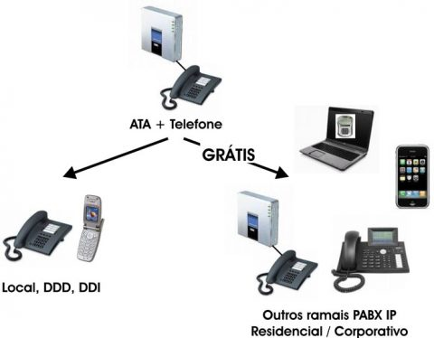

Cartas e encontros
Cartas demoravam a chegar e muitos assuntos eram conversados pessoalmente. A espera podia ser longa, mas os encontros presenciais tinham um papel central.
Telefone e televisão
O telefone permitiu conversas à distância em tempo real. A televisão passou a reunir famílias em torno de uma programação compartilhada, embora nem sempre houvesse diálogo.
Internet e smartphones
Mensagens, redes sociais e chamadas de vídeo facilitam o contato com pessoas em qualquer lugar e permitem compartilhar fotos, notícias e experiências.

Conectados, mas presentes?
Uma mensagem pode manter o contato com alguém distante, porém olhar para a tela durante uma conversa presencial pode transmitir desatenção. A qualidade da comunicação depende também de ouvir, observar expressões, fazer perguntas e responder com interesse.
Em casa, vale observar se as notificações interrompem refeições, conversas ou momentos de lazer em família.
| Possibilidade | Desafio |
|---|---|
| Conversar com parentes que moram longe | Deixar de conversar com quem está ao lado |
| Compartilhar fotos e momentos | Sentir pressão para registrar tudo em vez de vivenciar |
| Acessar informação e entretenimento | Perder a noção do tempo diante da tela |